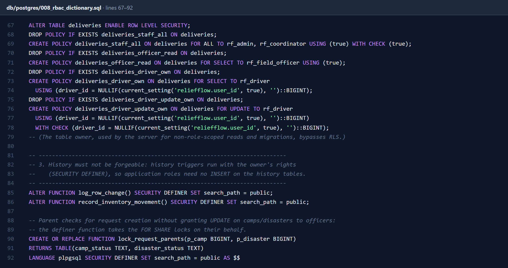
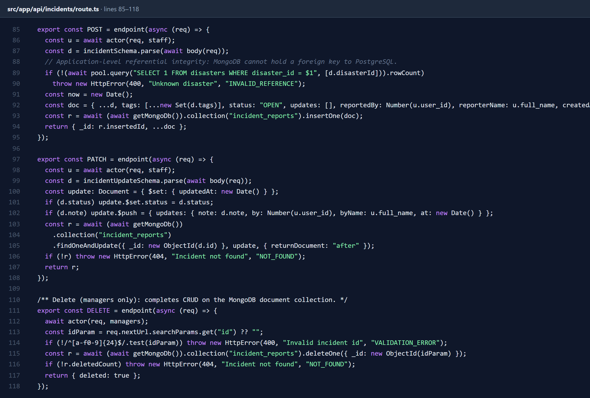
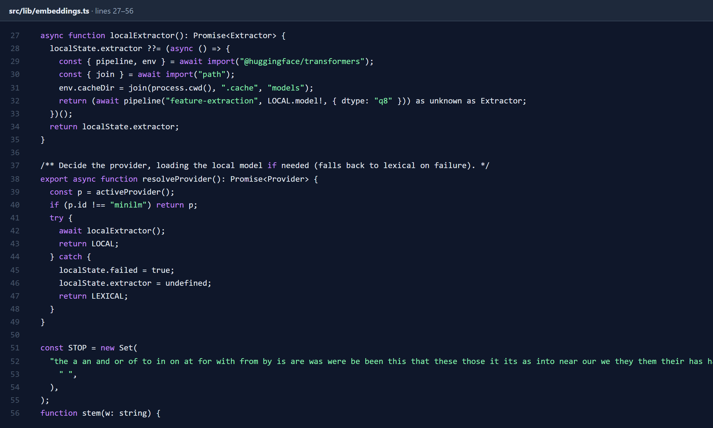

| Member | SRN | Ownership area |
|---|---|---|
| SUJAL Y | PES1UG24CS475 | Relational database (PostgreSQL), transactions, security, core workflow APIs, SQL lab |
| SUJAN H | PES1UG24CS477 | MongoDB, vector search, Redis, Neo4j, Next.js interface, testing, documentation |
This guide is for presenting and defending the project in the viva. It is split into ownership areas:
Every topic is explained in the same order:
Be honest in the viva. This split is an ownership plan: who is responsible for understanding, presenting and modifying which part. The Git history shows the commits under the account that pushed them. The course asks for individual contributions to be visible in Git, so each of you should make your own commits from your own GitHub account for your area. A small, real improvement or extra test is enough. Examiners often ask you to modify something live; Part 6 lists safe modifications for each member to practise.
ReliefFlow is a disaster-relief coordination platform.
The design rule: PostgreSQL is the source of truth for everything that must stay consistent. MongoDB stores free-form incident reports. pgvector makes those reports searchable by meaning. Redis caches the dashboard and Neo4j answers relationship questions. All of it sits behind a Next.js web application with four roles. The project goes beyond CRUD because correctness is enforced inside the database, by constraints, triggers, procedures, row locks and row-level security. A built-in DBMS lab demonstrates every syllabus unit live.
Disaster ──affects──▶ Location ◀── Camp ──raises──▶ Resource Request ──contains──▶ Request Items
│ PENDING → APPROVED (or REJECTED / CANCELLED)
▼
Warehouse ──holds──▶ Inventory (stock) ──▶ Allocation + Allocation Items (stock deducted by trigger)
▼
Vehicle + Driver + Volunteers ──▶ Delivery: PLANNED → IN_TRANSIT → DELIVERED
▼
request becomes PARTIALLY_FULFILLED / FULFILLED (stored procedure)| Role | Can do | Database role |
|---|---|---|
| ADMIN | Everything, including user management | rf_admin |
| RELIEF_COORDINATOR | Approve, allocate, plan deliveries, manage stock and master data | rf_coordinator |
| FIELD_OFFICER | Raise requests, admit or discharge people at camps, file incidents | rf_field_officer |
| DRIVER | See and progress only their own deliveries | rf_driver |
Demo logins: admin@reliefflow.local (password set by you), coordinator, field-officer and driver demo accounts (see README).
What. The ER diagram (docs/viva/ReliefFlow-ER-Diagram.drawio, Chen notation) shows 24 entities and 34 relationships.
Why. The ER model is the conceptual design. It fixes what we store and how things relate before any table exists.
How the entities were found. Take the nouns of the workflow: disaster, location, camp, warehouse, resource, category, request, request item, inventory line, allocation, allocation item, delivery, vehicle, volunteer, user and role. Add the support entities: sessions, audit log, change log, stock movements and login attempts.
Things to point at on the diagram:
request_items exists only inside a request; its key is (request_id, resource_id).inventory is a stock line identified by (warehouse_id, resource_id).disaster_locations.delivery_volunteers.Viva questions.
GENERATED ALWAYS AS IDENTITY) are stable, small and fast to join.What. There are 25 tables (docs/viva/ReliefFlow-Relational-Schema.drawio).
How. Apply the standard mapping rules:
| ER construct | Becomes | Example |
|---|---|---|
| Strong entity | Table + PK | relief_camps(camp_id PK, …) |
| Weak entity | PK includes owner key | request_items PRIMARY KEY (request_id, resource_id) |
| 1:N | FK on the N side | resource_requests.camp_id → relief_camps |
| M:N | Junction table | disaster_locations(disaster_id, location_id, …) |
| Composite attribute | Split columns | coordinates → latitude, longitude |
| Multivalued attribute | Separate table / array | tags → MongoDB array |
The cleverest part: composite foreign keys. allocation_items has three composite FKs:
(allocation_id, request_id) → allocations;(request_id, resource_id) → request_items;(warehouse_id, resource_id) → inventory.Because request_id and resource_id are shared, the database itself guarantees two things. You can only allocate a resource that the request asked for. You can only draw it from a warehouse that stocks that resource. A single-column FK could not express either rule.
Normalisation. The schema is in 3NF / BCNF: every non-key attribute depends on the key, the whole key, and nothing but the key.
resource_requests.disaster_id is kept although a camp belongs to a disaster. A camp can serve several disasters over time, so the request records which one it was for. This is a real fact, not redundancy.The lab page /lab/normalization computes closures, candidate keys and a BCNF/3NF decomposition live.
Files. In db/postgres/:
001_schema.sql: base schema.005_integrity_security.sql: hardening.006_allocation_history.sql007_dbms_engineering.sql: views, functions, procedure, full-text search.008_rbac_dictionary.sql: roles, RLS, data dictionary.scripts/migrate.ts runs each file once and records it in schema_migrations. That makes migrations incremental and repeatable, so you never drop the database.
Constraint types to name:
PRIMARY KEY and FOREIGN KEY with actions:NOT NULL, UNIQUE, DEFAULT.CHECK:quantity_available >= 0;current_population <= capacity;ended_at >= started_at;~* '^[^@\s]+@[^@\s]+\.[^@\s]+$';CREATE UNIQUE INDEX uq_active_delivery_vehicle ON deliveries(vehicle_id) WHERE status IN ('PLANNED','IN_TRANSIT','DELAYED');Indexes (65).
(status, priority_level, need_by) for the request queue.tsvector columns for full-text search.pg_trgm) for fuzzy name search./lab/optimization proves an index turns a sequential scan into an index scan, with measured times.Views (5).
v_low_stockv_request_fulfillmentv_warehouse_inventory_summaryv_resource_demandv_disaster_response_summaryViews hide join complexity and give the dashboard a stable interface.
Viva questions.
Every API operation is parameterised SQL ($1, $2, …). User input never becomes SQL text, which is why SQL injection is impossible. Know these query types. The first eight are in the Project Report §11 with live results; the last two are lab demos.
| Type | ReliefFlow example |
|---|---|
| JOIN + GROUP BY + HAVING + ORDER BY | Requests per camp, only camps with more than 1 request |
| Aggregates | Stock by category: COUNT, SUM, AVG, MIN, MAX |
| Nested subquery | Resources whose total stock is below the average |
| Correlated subquery | Camps that requested more than 1,000 units (the inner query refers to the outer camp) |
| NOT EXISTS (relational division) | Warehouses that stock every MEDICAL resource |
| Recursive CTE | Days until drinking water runs out: anchor = today's stock, each step subtracts a day's use |
| Window functions | Ranking requests by priority (RANK() OVER (…)) |
| Full-text search | Disasters matched with websearch_to_tsquery on a GIN-indexed tsvector |
| Set operations (lab) | UNION / INTERSECT / EXCEPT in /lab/algebra |
| UPSERT (lab) | INSERT … ON CONFLICT … DO UPDATE (report §10) |
Correlated vs nested. A nested subquery runs once and its result is reused. A correlated subquery refers to the outer row, so logically it is re-evaluated for each outer row.
| Object | Type | What it guarantees |
|---|---|---|
validate_allocation_item() | BEFORE trigger on allocation_items | Rejects lines with more than available stock or more than outstanding demand, and makes lines immutable after creation |
trg_adjust_inventory | Trigger | Deducts stock automatically when an allocation line is inserted, and restores it on cancellation |
record_inventory_movement() | AFTER trigger on inventory | Writes every stock change to inventory_movements (who, delta, reason) |
allocation_status_guard / delivery_status_guard | State-machine triggers | Allow only legal transitions, e.g. DELIVERED cannot go back to PLANNED |
delivery_vehicle_guard | Trigger | A vehicle under maintenance cannot be assigned |
prevent_operational_duplicate() | Trigger | Same disaster or warehouse entered twice (normalised names) → rejected |
log_row_change() | Generic AFTER trigger on many tables | Field-level audit: old and new values in data_change_log |
refresh_request_status(p_request_id) | PROCEDURE (CALL) | Single source of truth that recomputes request status (APPROVED → PARTIALLY_FULFILLED → FULFILLED) from what was actually delivered |
resource_availability(), request_fulfillment_pct(), remaining_request_quantity() | Functions | Reusable calculations used by views and APIs |
operational_summary() | Set-returning function | Dashboard KPIs in one call |
lock_request_parents() | SECURITY DEFINER function | Lets a field officer lock the camp and disaster rows (FOR SHARE) without having UPDATE rights on them |
Why triggers instead of application code?
Function vs procedure.
CALL and can manage transactions.What. Every multi-step operation runs in a single transaction: transaction() in src/lib/api.ts.
The race we prevent. Two coordinators allocate the last 100 litres of water at the same time. Without locking, both read "100 available", both allocate, and stock becomes −100 (the lost-update problem).
How we prevent it.
SELECT … FOR UPDATE row-locks the request, then the stock lines, always in the same order (request → lines → stock). A consistent lock order means two transactions can never wait for each other in a cycle, so no deadlock.CHECK (quantity_available >= 0) is the final safety net.xmin (PostgreSQL's row version). The UPDATE adds WHERE xmin = $version. If someone else edited first, 0 rows match, and the user gets "changed by someone else, reload".SET current_population = current_population + $n. The test fires 12 concurrent admissions and all 12 are counted.lock_timeout = 5s, so a stuck lock never hangs the app.Demo. Open /lab/transactions and run a scenario. Two real database sessions are shown side by side: session B waits on session A's lock, then fails cleanly. Also show the isolation-level demos (dirty read impossible, non-repeatable read under READ COMMITTED vs REPEATABLE READ).
Viva questions.
What (migration 008). There are four PostgreSQL roles: rf_admin, rf_coordinator, rf_field_officer and rf_driver. They are NOLOGIN roles that the application switches into.
How. Inside every transaction, the API runs:
SELECT set_config('reliefflow.user_id', '11', true); -- who is acting (transaction-local)
SET LOCAL ROLE rf_driver; -- with whose privilegesFrom that point, PostgreSQL itself checks every statement:
UPDATE inventory → permission denied.app_users.password_hash;current_population and status of camps;status, departure_time and actual_arrival of deliveries.deliveries:CREATE POLICY deliveries_driver_own ON deliveries FOR SELECT TO rf_driver
USING (driver_id = NULLIF(current_setting('reliefflow.user_id', true), '')::BIGINT); The same SELECT * FROM deliveries returns 6 rows for the owner and 2 rows for driver 11. Updating another driver's delivery affects 0 rows, so the API answers 404 (it does not even reveal that the row exists).
data_change_log, inventory_movements) cannot be written directly by any role. Only the SECURITY DEFINER triggers can write them, so the audit trail cannot be forged.Why both API checks and database checks? Defence in depth. Even if a future API route forgets a role check, the database still refuses.
Demo. /lab/security: run "Row-level security" and "Column privileges". Each step shows ALLOWED or DENIED by PostgreSQL, with the real error, and everything is rolled back.
Every table and all 151 columns have a description, stored with COMMENT ON (migration 008). The ER explorer (/lab/er) and the report's data dictionary read these descriptions from the catalog (col_description()), so the documentation can never drift from the schema.
Files:
src/app/api/requests/route.ts: create, approve, reject, cancel.src/app/api/operations/route.ts: generic CRUD for master data, stock adjustments, allocations, deliveries, users.src/app/api/auth/route.ts: login and logout.src/lib/api.ts: endpoint(), actor(), transaction(), readAs().src/lib/validation.ts: Zod schemas.The request pipeline in every route:
endpoint() catches errors and maps them to safe HTTP codes: constraint violation → 409, validation → 400.actor() authenticates the session and checks the role and the origin (CSRF).transaction(fn, user) runs the SQL as the user's DB role.Authentication.
sessions.login_attempts, locked FOR UPDATE so parallel guesses are counted correctly.The explainable allocation planner (/api/intelligence) scores each warehouse for each request line:
The UI shows why each warehouse was suggested. Recommendations are advisory; submitting still goes through the locks and triggers.
| Page | Shows |
|---|---|
/lab/concepts | DBMS vs file system, schema levels, data independence |
/lab/er | Live ER explorer from the catalog, with descriptions |
/lab/algebra | Relational algebra (σ, π, ⋈, ∪, −, ÷) next to the equivalent SQL, run live |
/lab/sql | Safe SQL playground: one statement, read-only, always rolled back, dangerous functions blocked |
/lab/advanced | Views, functions, procedure, triggers, CTEs, window functions |
/lab/optimization | EXPLAIN ANALYZE: sequential vs index scan, join strategies, 300k-row benchmark table |
/lab/normalization | Functional dependencies → closures → keys → BCNF/3NF decomposition |
/lab/transactions | ACID, isolation anomalies, locks, deadlock, concurrency scenarios |
/lab/security | Roles, column privileges, RLS, audit-forgery prevention |
Safety. The lab runs on a separate sandbox database (reliefflow_lab) with a restricted role rf_lab, and every run is rolled back. Demos can never damage real data.



| Data | Shape | Best store | Reason |
|---|---|---|---|
| Stock, requests, allocations, deliveries | Highly related, updated concurrently, must never be inconsistent | PostgreSQL | ACID, FKs, constraints, locks |
| Incident reports from the field | Free text, optional GPS, variable tags, a growing list of follow-up notes, read as a whole | MongoDB | Flexible documents, embedded arrays, text index, aggregation |
| "Find reports similar in meaning" | High-dimensional vectors | pgvector | Similarity search with an ANN index |
| Dashboard numbers read every few seconds | Key → value with expiry | Redis | In-memory, TTL |
| "How is this disaster connected to that warehouse?" | Multi-hop relationships | Neo4j | Graph traversal in Cypher |
One-line answer: we chose each database for the shape of its data, and PostgreSQL stays the single source of truth.
Files.
src/app/api/incidents/route.ts: CRUD and search.src/lib/mongodb.ts: client and collection setup.db/mongodb/validator.json (the $jsonSchema) and scripts/create-mongo-indexes.ts (applies it and creates indexes).db/mongodb/incident_commands.mongosh.js: every command, runnable.Document model.
{ "disasterId": 11, "reportedBy": 7, "reportType": "MEDICAL", "severity": "CRITICAL", "status": "OPEN",
"description": "Cluster of acute diarrhoea among children…",
"location": { "label": "Paravur Government School Camp", "latitude": 10.1517, "longitude": 76.229 },
"tags": ["waterborne", "children"],
"updates": [ { "note": "Medical team dispatched", "by": 6, "at": "…" } ],
"createdAt": "…", "updatedAt": "…" }Embed or reference?
location and updates are embedded: they belong to one report and are always read with it, so one read returns everything.disasterId and reportedBy are references to PostgreSQL. Before inserting, the API checks in PostgreSQL that the disaster exists and is active. That keeps referential integrity across the two stores.Validation. $jsonSchema on the collection:
A bad document is rejected by MongoDB itself (error 121, "Document failed validation"). This is database-level validation for NoSQL.
Indexes:
{disasterId: 1, createdAt: -1} lists a disaster's reports, newest first, without sorting;{reportType, severity} and {status, createdAt} serve the filters;$text search returns textScore, so a match in the description ranks higher than a match in the location.explain() shows IXSCAN with the index vs COLLSCAN without it (/lab/nosql).CRUD in the app (Incidents page):
$text search, detail.$set the status and $push a note into updates.Aggregation pipelines:
$facet computes several summaries in one pass (by severity, by type, by status);$unwind + $group counts the top tags;$lookup joins with another collection.Viva questions.
$push, text indexes and aggregation pipelines.What. Coordinators search reports by meaning. "Kids getting ill from dirty water" finds "Cluster of acute diarrhoea among children… contaminated water" even though the key words differ.
The questions the course requires, with our answers:
| Question | Answer |
|---|---|
| What is embedded? | Incident descriptions (+ tags + location), request summaries (camp, items, remarks) and disaster descriptions: 44 documents |
| Which model? | all-MiniLM-L6-v2 (sentence-transformers), run locally through Transformers.js / ONNX. Output: 384 numbers, mean-pooled and L2-normalised. No API key, and no data leaves the laptop. |
| Where are vectors stored? | Table document_vectors in a separate PostgreSQL + pgvector database: embedding vector, plus title, content and metadata JSONB |
| Index | HNSW (Hierarchical Navigable Small World), a graph-based approximate-nearest-neighbour index, with vector_cosine_ops |
| Metric | Cosine similarity = 1 − cosine distance (operator <=>). Cosine compares direction, not length, which suits normalised text embeddings. |
| Retrieval | Embed the query with the same model, then ORDER BY embedding <=> $query LIMIT 8, optionally filtered by source. The keyword ($text) results are shown beside it for comparison. |
How it works step by step:
src/lib/embeddings.ts loads the model once (lazy) and caches it in .cache/models.src/lib/vector.ts reads incidents from MongoDB and requests and disasters from PostgreSQL. It builds a text for each, embeds them in batches of 32, and UPSERTs into document_vectors (PK source, source_id, provider). Each sync run is logged in integration_sync_runs.Provider fallback:
WHERE provider = 'minilm') keeps vectors of different sizes apart.Demo. Open /lab/vector and type "kids getting ill from dirty water". Point out:
Viva questions.
Redis (src/lib/cache.ts).
SET key value EX 30). Every write deletes them, so data is never stale for long.INCR + EXPIRE)./lab/keyvalue shows keys, TTLs and hit/miss.Neo4j (src/lib/graph.ts, /api/graph).
MATCH p = shortestPath((d:Disaster)-[*..10]-(w:Warehouse)) RETURN p.MERGE makes the sync idempotent. A failed sync is recorded and retried, which is covered by the services test./lab/graph draws the result as a force-directed graph.Structure.
src/app/*/page.tsx are the pages (App Router).src/app/api/*/route.ts is the API.src/components/ holds reusable UI:ui/primitives.tsx: Button, Card, Badge, Alert, Meter, PageHeader…ui/DataTable.tsx: search, filter, sort, paginate.ui/overlays.tsx: modal, drawer, confirm dialog, toasts.shell/AppShell.tsx: sidebar navigation, role-aware menu, service-health pills.charts/Charts.tsx, map/OpsMap.tsx (Leaflet map) and Management.tsx (the generic manage screen).Screens:
How a page talks to the API. src/lib/client.ts wraps fetch: JSON in and out, cookie sent automatically, errors become readable messages. Pages check the user's role (useMe()) to hide actions the user cannot perform. The server still enforces the rule; hiding is only for usability.
Forms.
Design. A consistent design system with CSS variables, a responsive layout (works on mobile, with a hamburger menu), a keyboard skip link, ARIA labels, and loading, empty and error states on every page.
| Suite | File | What it proves |
|---|---|---|
| Unit (27) | tests/*.test.ts | Validation schemas, state machines, normalisation engine, SQL guard, origin check, embeddings |
| Integration (30 checks) | scripts/integration-test.ts | Creates a fresh isolated database, starts the app and tests every API, the concurrency races, RBAC/RLS and MongoDB CRUD, then drives a real browser (Playwright) through every screen |
| Services (4) | scripts/services-test.ts | Redis, Neo4j sync, Neo4j failure + retry, pgvector |
The integration suite never touches your real data: it creates reliefflow_test_<timestamp>.
Viva question: How do you test concurrency? Fire N requests at the same moment with Promise.all and assert the outcome. For example, two allocations of the same stock: exactly one succeeds and stock is never negative.
| Page | Shows |
|---|---|
/lab/nosql | MongoDB CRUD, validation rejection, text search, aggregation, explain (IXSCAN vs COLLSCAN) |
/lab/keyvalue | Redis keys, TTL, cache hit vs miss, rate limiter |
/lab/graph | Neo4j projection, Cypher queries, force-directed graph |
/lab/vector | Semantic search, provider, query vector, timings, re-embed |
/lab/integration | How the five stores connect, sync history, request trace |



Browser (React pages) → /api/* route handlers (auth · role · Zod · transaction as DB role)
→ PostgreSQL (truth) · MongoDB (incidents) · pgvector (embeddings) · Redis (cache) · Neo4j (graph)Credentials come only from environment variables (.env.local), which are never committed. Optional services can be off, and the core still works ("degraded mode", covered by a test).
| Item | Value |
|---|---|
| Tables / columns | 25 / 151 |
| Foreign keys / CHECK constraints | 34 / 42 |
| Indexes / views | 65 / 5 |
| Triggers / functions / procedures | 16 / 13 / 1 |
| DB roles / RLS policies | 4 / 4 |
| Embedding dimensions | 384 (MiniLM) |
| Tests | 27 unit · 30 integration · 4 services |
SUJAL, know this about SUJAN's part:
SUJAN, know this about SUJAL's part:
refresh_request_status sets request status.xmin detects stale edits.| Time | Speaker | Content | Screen |
|---|---|---|---|
| 0:00–1:00 | SUJAL | Problem and objectives; the one-paragraph summary | Title + Command Center |
| 1:00–2:30 | SUJAN | Technology choice per data type (table 2.1); architecture | Report §5–6 |
| 2:30–4:30 | SUJAL | ER diagram → relational schema; weak entities, composite FKs, normalisation | Draw.io diagrams, /lab/er |
| 4:30–6:00 | SUJAN | Live workflow: log in, create a request, approve it, open the allocation planner and explain the scores, allocate, plan a delivery | /requests |
| 6:00–7:30 | SUJAL | What happened in the database: trigger deducted stock, procedure updated status, audit log; show an important query with JOIN/HAVING and a recursive CTE | /manage/movements, /lab/advanced |
| 7:30–9:00 | SUJAL | Wow 1: concurrency. Two sessions, row lock, the loser is rejected, stock never negative | /lab/transactions |
| 9:00–10:00 | SUJAL | Wow 2: database RBAC. Same query, different rows; permission denied from PostgreSQL | /lab/security |
| 10:00–11:30 | SUJAN | MongoDB: file an incident, $text search, aggregation facets, update with $push, delete (managers only), explain IXSCAN | /incidents, /lab/nosql |
| 11:30–13:00 | SUJAN | Wow 3: semantic search. "kids getting ill from dirty water" → diarrhoea report; explain embedding, HNSW, cosine | /lab/vector |
| 13:00–14:00 | SUJAN | Redis cache and Neo4j path (brief); testing results | /lab/keyvalue, /lab/graph, report §20 |
| 14:00–15:00 | Both | Rubric coverage and conclusion; take questions | Report §21 |
Before the viva:
docker compose up -d and npm run dev.Examiners often say "change X and show it". Practise these on your laptop and commit them from your own account.
SUJAL:
ALTER TABLE vehicles ADD CONSTRAINT vehicles_capacity_max CHECK (capacity < 50000) NOT VALID;Then show that an edit above the limit is rejected (409).
CREATE VIEW v_driver_load AS SELECT driver_id, count(*) FROM deliveries WHERE status IN ('PLANNED','IN_TRANSIT') GROUP BY driver_id; Then query it in /lab/sql.
src/app/api/intelligence/route.ts, change the distance weight (30 - distance_km / 20) and show the ranking change in the allocation planner./lab/sql. For example, total units delivered per disaster (JOIN deliveries → allocations → requests → disasters, GROUP BY).SUJAN:
"FIRE" to the enum in db/mongodb/validator.json, in src/lib/validation.ts and in the select on the Incidents page. Re-run npm run mongo:indexes and file a FIRE report.$group on $dateToString, in /lab/nosql or the mongosh script.semanticSearch(query, 8, source) in src/app/api/vector/route.ts), or add a "minimum similarity" filter (WHERE 1 - (embedding <=> q) > 0.3).DataTable on a management page.After each change, run npm test and npx tsc --noEmit.
| Question | Answer |
|---|---|
| What is a DBMS and why not files? | Concurrency, integrity constraints, transactions, security, a query language, recovery |
| Primary key vs unique key? | A PK is unique + not null, one per table, the row's identity; UNIQUE allows NULL and there can be many |
| What is a foreign key action? | What happens to child rows on delete or update: RESTRICT / CASCADE / SET NULL |
| What is 3NF? | No transitive dependency of a non-key attribute on the key |
| What is BCNF? | Every determinant is a candidate key |
| Trigger vs procedure? | A trigger fires automatically on an event; a procedure is called explicitly |
| What is a view? Is it stored? | A stored query; data is not stored (a materialised view would store it) |
| What is a CTE / recursive CTE? | A named subquery (WITH); recursive CTEs repeat a step until a condition (our stock burn-down; also used for hierarchies) |
| What does an index cost? | Extra storage and slower writes; worth it for frequent filtering and joins |
| What is deadlock and how do you avoid it? | Two transactions each waiting for the other; avoided by a consistent lock order |
| What is MVCC? | PostgreSQL keeps row versions, so readers do not block writers; xmin is the version we use for optimistic locking |
| What is row-level security? | A policy that filters which rows a role can see or change |
| Why MongoDB for incidents? | Semi-structured, evolving documents with embedded arrays; text search and aggregation |
What is $lookup? | MongoDB's left outer join between collections |
| What is an embedding / HNSW / cosine? | See §2.3 |
| How are secrets handled? | Environment variables only; .env* is git-ignored |
| What happens if Redis or Neo4j is down? | The core keeps working; caches fall back to memory and graph features show "unavailable" |
| What would you do next? | Real-time GPS, SMS alerts, read replicas, multilingual embeddings |